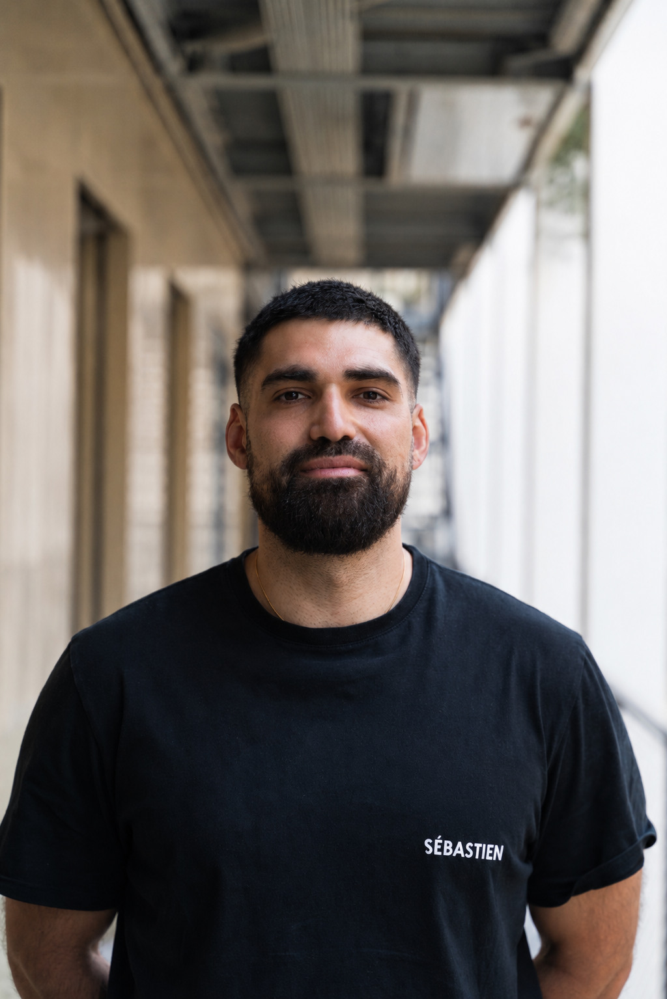
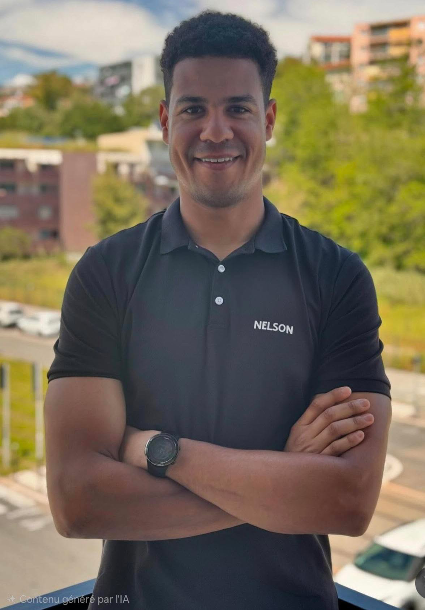
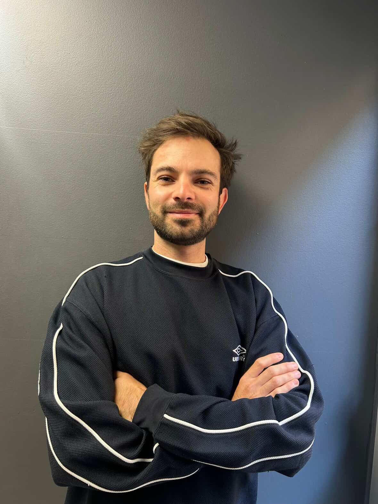

Blessé, douloureux, ou bloqué dans ta progression — notre équipe d'experts en réhabilitation sportive t'accompagne vers un retour durable à l'activité, depuis chez toi.
Dis-nous où tu en es — les 20 minutes offertes partent de là.

Avant d'être kiné du sport, j'ai été patient. Et pas qu'une fois. J'ai connu la frustration d'être blessé sans comprendre, d'être soigné sans programme clair, de rechuter parce que la reprise a été trop rapide. C'est ce qui m'a donné envie de construire quelque chose de différent.
Une douleur qui s'éteint ne dit rien de ce que ton corps peut encaisser le mois suivant. Mon travail : remonter ton niveau de capacité au-dessus des contraintes réelles de ton sport.
Aucun programme automatisé. Chaque programme est construit à la main, à partir de notre bilan, de notre expérience et des données terrain. Ce qu'on te donne, c'est ce qu'on ferait pour nous-mêmes.
Pour les sportifs qui n'ont pas accès à un expert du sport à portée, ou qui veulent un suivi structuré entre deux séances.
C'est ta situation qui décide, pas la géographie.
Études de médecine, diplôme d'infirmier à Nancy, puis quatre années d'école de kiné. Diplômé en 2019. Spécialisation sport en 2020. C'est ma conviction sur la réhabilitation active qui m'a poussé à créer ce suivi à distance.
Tu as un kiné référent qui construit ton programme et assure ton suivi. Derrière lui, l'équipe échange régulièrement sur les cas et les blocages.
Ancien infirmier devenu kiné du sport, en formation de préparateur physique. C'est ma conviction sur la réhabilitation active — et mes propres blessures — qui m'ont poussé à créer ce suivi à distance.

Ancien international de football américain, diplômé en 2022 après une licence STAPS. Il a accompagné les équipes nationales de football américain (France) et de biathlon (Belgique).

Pratiquant de sports d'endurance, formé à la prise en charge de l'épaule du sportif et aux neurosciences de la douleur. Il intègre le mécanique comme le global.
On fait le point sur ta problématique et tes objectifs, et on voit ensemble si notre accompagnement est adapté. Si ce n'est pas le cas, on te le dira.
Réserver mon échange de 20 min »Pressothérapie, pistolets de massage, équipements de récupération active. Ce qu'on utilise et recommande au quotidien.
Compléments alimentaires premium, sans compromis sur les formulations. La référence pour les sportifs exigeants.
Équipements de réhabilitation de qualité professionnelle. Tout ce qu'il faut pour s'entraîner efficacement à domicile.
Protocoles par pathologie — genou, épaule, lombaires, cheville. Directement utilisables en cabinet.
Accéder →Échanges cliniques, cas complexes, dry needling, prépa physique. Entre kinés du terrain.
Rejoindre →Webinaires sur la réhabilitation sportive, la prépa physique et la prise en charge à distance.
S'inscrire →Échanges cliniques, protocoles, dry needling. Groupe WhatsApp privé, accès gratuit sur demande.
Le premier échange de 20 minutes est offert et sans engagement. Il sert à comprendre ta situation et à voir si on peut t'être utile.
Remplis le formulaire — on te répond sous 24h.
Sans engagement · Réponse sous 24h